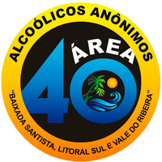

ÁREA40 BAIXADA SANTISTA
Alcoólicos Anônimos
Alcoólicos Anônimos
O Alcoólicos Anônimos (AA) é uma organização mundial de apoio e recuperação para pessoas que têm problemas com álcool. Desde a sua fundação em 1935, o AA tem ajudado milhões de pessoas a superar a dependência do álcool. Uma das ferramentas mais conhecidas do AA, é uma lista de 12 perguntas que podem ajudar a avaliar se alguém tem problemas com o álcool ou não. Abaixo discutiremos sobre cada uma delas.
Esta pergunta é um sinal de alerta para pessoas que bebem mais do que gostariam ou que têm dificuldade em controlar a quantidade de álcool que consomem.
Se amigos, familiares ou outras pessoas próximas expressaram preocupações sobre o consumo de álcool, isso pode ser um sinal de que há um problema.
Ao perceber que o consumo pode estar sendo um problema, a pessoa passa a inventar fórmulas que podem amenizar aos poucos os indícios do alcoolismo. Ações como mudar de destilados para vinhos ou cervejas, ou até mesmo misturar água a bebida buscando “dilui-la”, não são efetivas para evitar ficar embriagado.
Essa é uma pergunta que pode revelar uma dependência do álcool, já que as pessoas que bebem todos os dias ou com frequência podem precisar de uma bebida para se acalmar ou para evitar os sintomas de abstinência.
EÉ comum se sentir dessa forma, quando se pára para pensar o porque as pessoas podem beber tranquilamente, e no seu caso é algo parecido a uma necessidade e frequentemente um convite ao desastre.
Em termos médicos, o alcoolismo é uma doença progressiva, ou seja, se não tratada ela evolui sem parar. Por isso, escolher se tratar e se afastar do álcool em todas as suas formas é a melhor opção!
Muitas pessoas acreditam que beber pode ser uma forma de fugir ou amenizar situações desagradáveis em casa. A verdade é que isso acaba agravando ainda mais, levando a problemas irreversíveis.
Em reuniões familiares ou com amigos, onde é necessário beber socialmente, é comum pessoas alcoólatras buscarem formas de conseguirem doses a mais. Nesse caso envolve também fatores como beber antes de chegar ao local, para garantir que se sinta “satisfeito” ou continuar bebendo mesmo depois da festa.
É comum tentar se iludir dizendo que pode parar quando quiser ou sem ajuda externa. Isso pode ocorrer diversas vezes até que a pessoa identifique que não consegue parar sozinha.
Faltar ao serviço ou eventos importantes por ter bebido demais (ou por estar bêbado), é também considerado um sintoma. Além disso, é comum dar desculpas e apelar para diversos males que tentam justificar a ausência.
Os chamados “apagamentos” (em que a pessoa continua acordada, porém sem poder lembrar mais tarde do que aconteceu) é um denominador comum nos casos de alcoolismo. Além disso, isso coloca em risco a segurança e integridade física do mesmo.
Perceber que o álcool se tornou um problema, é o primeiro passo para procurar ajuda. A verdade é que o alcoolismo é uma doença que nunca desaparece, por isso a força de vontade e um tratamento adequado são primordiais para superá-la.
De acordo com os Alcoólicos Anônimos, se você respondeu SIM para quatro perguntas ou mais, é provável que você tenha um problema sério de bebida, ou poderá tê-lo no futuro.Se você ou alguém que você conhece, precisa de ajuda com esse assunto, entre em contato com o A.A.
Localização e Horários
Av. Afonso Pena, 614, Igreja - Aparecida
Santos/SP
Segunda e Sexta 19:00 às 21:00
Av. Doutor Pedro Lessa, 2262,sala 11 - Aparecida
Santos/SP
Segunda 15:00 às 16:30 e 19:00 às 21:00
Terça a Sábado 19:00 às 21:00
Domingo 18:00 às 20:00
Praça Coronel Fernando Prestes, sn - Embaré
Santos/SP
Terça e Quinta 19:30 às 21:30
Sábado 19:30 às 21:30
R. Dr. Manoel Tourinho, 352 - Macuco
Santos/SP
Quarta E Sexta 19:00 às 21:00
Domingo 10:00 às 12:00
Rua Alexandre Herculano, 107 - Boqueirão
Santos/SP
Segunda a Domingo 19:00 às 20:30
Avenida São João, 200 - Sítio Paecara
Guarujá/SP
Segunda e Sábado 19:00 às 21:00
R. Washington, sn, Centro
Guarujá/SP
Sexta e Domingo 19:30 às 21:30
Av. Dona Ana Costa, 74 - Vila Matias
Santos/SP
Segunda, Quarta e Sexta 19:00 às 21:00
R. Padre Anchieta, 117, Vila Alice
Guarujá/SP
Quarta 19:00 às 21:00
Domingo 18:00 às 20:00
Rua São Judas Tadeu, 28 - Marapé
Santos/SP
Terça e Quinta 09:30 às 11:00
Av. Padre Manoel da Nóbrega, 256 - Boa Vista
São Vicente/SP
Quarta 19:30 às 21:30
Av. Francisco Ferreira Canto,315 - Vila São jorge
Santos/SP
Terça, Quinta e Sábado 20:00 às 22:00
Rua Quinze de Novembro, 16 - Centro
São Vicente/SP
Terça a Domingo 20:00 às 22:00
Rua Alberto Veiga, 9 - Parque São Vicente
São Vicente/SP
Segunda e Sexta 20:00 às 22:00
Rua Camaioré, 547 - Vila Margarida
São Vicente/SP
Quinta e Sábado 20:00 às 22:00
Rua Emancipador Paulo Fefin, 775 - Boqueirão
Praia Grande/SP
Seg/Qua/Sex E Sábado 20:00 às 22:00
Rua Salvador, s/n - Jardim Irmã Dolores
São Vicente/SP
Segunda e Sexta 19:00 às 21:00
Rua Sergipe, 41 - Samaritá
São Vicente/SP
Quarta 19:00 às 21:30
Domingo 10:00 às 12:30
Travessa José Vicente, 50 - Sitio Cafezal
Cubatão/SP
Quarta 19:00 às 21:30
Domingo 10:00 às 12:30
Rua Teófila Vanderlinde, 933 - Ocian
Praia Grande/SP
Segunda a Sábado 20:00 às 22:00
Domingo 10:00 as 12:00 e 19:00 às 21:00
Rua Joaquim Osório Duque Estrada, 24536 - Balneário Esmeralda
Praia Grande/SP
Domingo 18:00 as 21:00
Rua Rafael Costábile, 719 - ITAPANHAU
Bertioga/SP
Sábado 16:00 as 18:00
Rua José Batista Campos 1321 - Jardim Oásis
Itanhahém/SP
Seg/Qua/Sexta 19:30 as 21:30
Rua Ana Maria Martins Rivera, 10 - Corumbá
Itanhahém/SP
Seg/Ter/Qui/Sex 20:00 as 21:30
Domingo 10:00 as 12:00
Av. Guarujá, 757 -Sítio Paecara
Guarujá/SP
Terça e Quinta 19:30 as 21:30
Domingo 10:00 as 12:00
Av. Jaíro de Camargo Martins 1645 CASA 2 - Samambaia
Praia Grande/SP
Terça e Quinta 19:30 as 21:30
Domingo 18:00 as 20:00
Av. Presidente Kennedy, 19900 - Vila Caiçara
Praia Grande/SP
Terça e Quinta 19:30 as 21:30
Domingo 10:00 as 12:00
Rua Nossa Senhora da Rosa Mística, 525 - Itaguaia
Mongaguá/SP
Terça e Quinta 19:30 as 21:30
Domingo 10:00 as 12:00
Av. Semyramis de Souza Rossi, 1349 - Parque Oásis
Peruíbe/SP
Terça e Quinta 19:30 as 21:30
Domingo 10:00 as 12:00
Av. São Paulo, 458 - Cidade Beira Mar
Mongaguá/SP
Seg/Qua/Sab 19:00 as 21:00
Precisa de ajuda, entre em contato conosco!
Praça José Bonifácio, 59 3º andar salas 12 e 13Centro – CEP: 11013-190 - Santos – SP